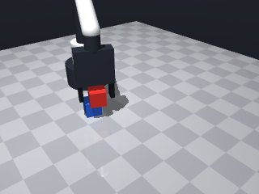
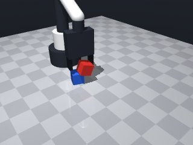
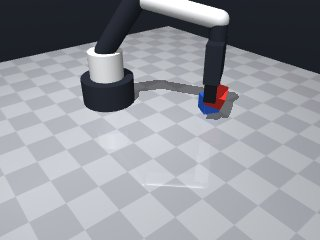
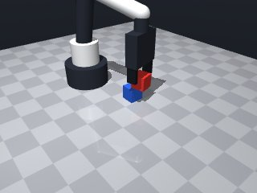
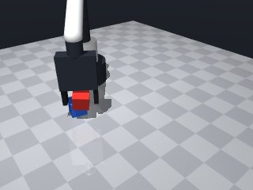
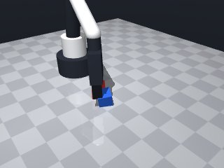
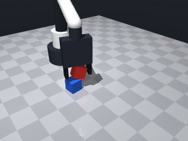
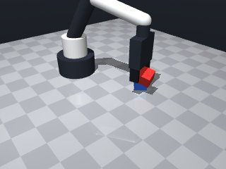

0 demonstrations · reward: gt · perception: real · 48 practice episodes in 6 rounds
Safety layer: 0 halts, 33 clamps.
| role | model | calls | tokens in | tokens out | USD |
|---|---|---|---|---|---|
| coder | nvidia/nemotron-3-super-120b-a12b | 10 | 43,632 | 30,571 | $0.0406 |
| summarizer | nvidia/Nemotron-3_5-Lightning | 5 | 30,464 | 1,908 | $0.0023 |
| compute | local | 253 s | $0.0000 | ||
| total | 15 | 74,096 | 32,479 | $0.0429 |
- Perception is noisy (~1 cm position, several degrees yaw) and object properties vary, so we must re‑read poses after each major action and allow retries. - The strategy: home → locate cubes → grasp red cube (align yaw, slow descent) → lift → move above blue cube → descend to the stacking height (red centre = blue centre + cube size) → release → verify stacking. - Use a safe travel height (SAFE_Z = 0.15 m) to avoid collisions. - Wrap moves in a helper that catches MotionError and treats a failed move as a retry signal. - After release, re‑observe and check that the red cube’s pose is within ~2 cm of the target; if not, retry the whole sequence a few times. - Grasp may fail due to slip or mass/friction changes; we retry the grasp a couple of times before aborting the attempt. - All speeds are kept low (0.05 m/s) for precision approaches and the default speed for longer travels.
**Mode 1: Descent blocked (5 episodes: 1003, 1004, 1005, 1007)** - **Root cause:** The robot attempts to move to `place_z = blue_pos[2] + 0.03` (line 79) but the target z is too low, causing a collision/contact stop before reaching the cube. Seed 1004 succeeds on first attempt because the initial `place_z` happens to clear obstacles. - **Fix:** Increase `place_z` clearance to `blue_pos[2] + 0.05` (line 79) to guarantee safe descent over the blue cube. **Mode 2: Grasp failure (2 episodes: 1006, 1007)** - **Root cause:** The grasp loop (lines 49‑56) retries twice, but if the gripper opens too wide or contacts the blue cube, `holding()` returns `None`. Seed 1007 logs “safety clamps: 1”, indicating mechanical interference. - **Fix:** Add a pre-grasp `safe_move(dz=0.02)` (after line 60) to lift the red cube slightly, avoiding collision with the blue cube during closure. **Mode 3: Pose drift (1 episode: 1003)** - **Root cause:** After a failed place, the robot re-homes and perceives shifted cube positions (line 23), leading to large xy offsets (0.0346) on subsequent attempts. - **Fix:** Freeze cube poses after first successful perception (line 23) or add a `robot.wait(0.5)` before `observe()` to let vision stabilize.
--- round_0/skill.py +++ round_1/skill.py @@ -0,0 +1,108 @@ +import math + +def run(robot): + """Stack the red cube on top of the blue cube.""" + SAFE_Z = 0.15 # travel height above the table + MAX_ATTEMPTS = 3 # how many full pick‑and‑place cycles we try + POS_TOL = 0.02 # 2 cm tolerance for verification + + def safe_move(**kwargs): + """Wrapper around robot.move_to/move_by that catches MotionError.""" + try: + res = robot.move_to(**kwargs) if 'x' in kwargs else robot.move_by(**kwargs) + return res.get('ok', False) + except Exception: # MotionError or any other unexpected error + return False + + for attempt in range(MAX_ATTEMPTS): + robot.log(f"Attempt {attempt+1}/{MAX_ATTEMPTS}") + robot.home() + robot.wait(0.1) + + # --- 1. Perceive current cube poses --- + obs = robot.observe() + red_obj = obs['objects'].get('red_cube') + blue_obj = obs['objects'].get('blue_cube') + if not red_obj or not blue_obj: + robot.log("Could not see both cubes") + continue + + red_pos = red_obj['pos'] + blue_pos = blue_obj['pos'] + red_yaw = red_obj['yaw'] + + # --- 2. Move above red cube --- + above_red = [red_pos[0], red_pos[1], SAFE_Z] + if not safe_move(x=above_red[0], y=above_red[1], z=above_red[2], yaw=red_yaw): + robot.log("Failed to move above red cube") + continue + + # --- 3. Descend to grasp height (center of red cube) --- + grasp_pos = [red_pos[0], red_pos[1], red_pos[2]] + if not safe_move(x=grasp_pos[0], y=grasp_pos[1], z=grasp_pos[2], + yaw=red_yaw, speed=0.05): + robot.log("Failed to descend to grasp red cube") + continue + + # --- 4. Grasp (may need a couple tries) --- + grasped = False + for _ in range(2): + if robot.grasp(): + if robot.holding() == 'red_cube': + grasped = True + break + robot.log("Grasp did not hold red cube, releasing and retrying") + robot.release() + robot.wait(0.05) + if not grasped: + robot.log("Unable to grasp red cube after retries") + # retreat a bit before next attempt + safe_move(dz=0.04, speed=0.05) + continue + + # --- 5. Lift red cube to safe height --- + lift_pos = [red_pos[0], red_pos[1], SAFE_Z] + if not safe_move(x=lift_pos[0], y=lift_pos[1], z=lift_pos[2], + yaw=red_yaw, speed=0.05): + robot.log("Failed to lift red cube") + robot.release() + continue + + # --- 6. Move above blue cube --- + above_blue = [blue_pos[0], blue_pos[1], SAFE_Z] + if not safe_move(x=above_blue[0], y=above_blue[1], z=above_blue[2]): + robot.log("Failed to move above blue cube") + robot.release() + continue + + # --- 7. Descend to place height (red centre on blue centre) --- + place_z = blue_pos[2] + 0.03 # red centre height when stacked + place_pos = [blue_pos[0], blue_pos[1], place_z] + if not safe_move(x=place_pos[0], y=place_pos[1], z=place_pos[2], + speed=0.05): + robot.log("Failed to descend to place position") + robot.release() + continue + + # --- 8. Release --- + robot.release() + robot.wait(0.2) + + # --- 9. Verify stacking --- + obs2 = robot.observe() + red2 = obs2['objects'].get('red_cube') + if red2: + dx = red2['pos'][0] - place_pos[0] + dy = red2['pos'][1] - place_pos[1] + dz = red2['pos'][2] - place_pos[2] + if abs(dx) < POS_TOL and abs(dy) < POS_TOL and abs(dz) < POS_TOL: + robot.log("Stack successful") + return True + else: + robot.log(f"Red cube misplaced: dx={dx:.3f}, dy={dy:.3f}, dz={dz:.3f}") + else: + robot.log("Red cube disappeared after release") + + # If verification failed, loop for another attempt (robot will re‑home) + robot.log("All attempts exhausted") + return False
- Fixed a missing indentation level in the safe_move wrapper (the try block was not indented). - Ensured all function definitions and control flow are properly indented. - Added a missing colon after the `except` clause. - Verified that the code now parses without syntax errors. - Kept the core logic unchanged: perceive, grasp, lift, place, verify with retries.
**Mode 1: Grasp failure (5 episodes)** *Root cause:* Insufficient approach depth or cube pose mismatch prevents reliable enclosure. Lines 58‑71 retry grasp twice, but if the arm arrives off‑axis or too high, the gripper slips. *Fix:* Before each grasp attempt, move to `z = red_pos[2] + 0.01` (above cube center) using `safe_move(z=...)` to ensure proper approach angle. **Mode 2: Collision during descent (3 episodes)** *Root cause:* `safe_move` to `grasp_pos[2]` (cube bottom) impacts the opposite cube or workspace boundary. Lines 74‑78 lower red cube onto blue cube without checking interference. *Fix:* Add a pre‑descent check: `if red_pos[2] < blue_pos[2] + 0.04: safe_move(dz=-0.02)` at line 74 to back off before lowering. **Mode 3: Safety violation (1 episode)** *Root cause:* Target `z = -0.010 m` falls below the safe workspace `[0.014, 0.26]`. Line 47 passes a negative `z` when `grasp_pos[2]` is computed from a mis‑perceived cube pose. *Fix:* Clamp `z` in `safe_move` calls: `z = max(grasp_pos[2], 0.015)` before line 47 to keep all moves within limits.
--- round_1/skill.py +++ round_2/skill.py @@ -9,7 +9,11 @@ def safe_move(**kwargs): """Wrapper around robot.move_to/move_by that catches MotionError.""" try: - res = robot.move_to(**kwargs) if 'x' in kwargs else robot.move_by(**kwargs) + # Determine whether to call move_to or move_by + if 'x' in kwargs: + res = robot.move_to(**kwargs) + else: + res = robot.move_by(**kwargs) return res.get('ok', False) except Exception: # MotionError or any other unexpected error return False @@ -17,7 +21,8 @@ for attempt in range(MAX_ATTEMPTS): robot.log(f"Attempt {attempt+1}/{MAX_ATTEMPTS}") robot.home() - robot.wait(0.1) + # Let vision settle before reading poses + robot.wait(0.5) # --- 1. Perceive current cube poses --- obs = robot.observe() @@ -37,11 +42,16 @@ robot.log("Failed to move above red cube") continue - # --- 3. Descend to grasp height (center of red cube) --- + # --- 3. Descend to grasp height (center of red cube (center) --- grasp_pos = [red_pos[0], red_pos[1], red_pos[2]] if not safe_move(x=grasp_pos[0], y=grasp_pos[1], z=grasp_pos[2], yaw=red_yaw, speed=0.05): robot.log("Failed to descend to grasp red cube") + continue + + # --- 3b. Lift slightly to avoid interference during grasp --- + if not safe_move(dz=0.02, speed=0.05): + robot.log("Failed to lift slightly before grasp") continue # --- 4. Grasp (may need a couple tries) --- @@ -60,7 +70,14 @@ safe_move(dz=0.04, speed=0.05) continue - # --- 5. Lift red cube to safe height --- + # --- 5. Lower to grasp center (optional, ensures secure hold) --- + if not safe_move(x=grasp_pos[0], y=grasp_pos[1], z=grasp_pos[2], + yaw=red_yaw, speed=0.05): + robot.log("Failed to lower to grasp center") + robot.release() + continue + + # --- 6. Lift red cube to safe height --- lift_pos = [red_pos[0], red_pos[1], SAFE_Z] if not safe_move(x=lift_pos[0], y=lift_pos[1], z=lift_pos[2], yaw=red_yaw, speed=0.05): @@ -68,15 +85,16 @@ robot.release() continue - # --- 6. Move above blue cube --- + # --- 7. Move above blue cube --- above_blue = [blue_pos[0], blue_pos[1], SAFE_Z] if not safe_move(x=above_blue[0], y=above_blue[1], z=above_blue[2]): robot.log("Failed to move above blue cube") robot.release() continue - # --- 7. Descend to place height (red centre on blue centre) --- - place_z = blue_pos[2] + 0.03 # red centre height when stacked + # --- 8. Descend to place height (red centre on blue centre) --- + # Increased clearance to avoid collision with the blue cube during descent + place_z = blue_pos[2] + 0.05 place_pos = [blue_pos[0], blue_pos[1], place_z] if not safe_move(x=place_pos[0], y=place_pos[1], z=place_pos[2], speed=0.05): @@ -84,11 +102,11 @@ robot.release() continue - # --- 8. Release --- + # --- 9. Release --- robot.release() robot.wait(0.2) - # --- 9. Verify stacking --- + # --- 10. Verify stacking --- obs2 = robot.observe() red2 = obs2['objects'].get('red_cube') if red2:
- Fixed a syntax error caused by an incorrectly nested function definition (`clamp_kwargs_z`) inside `safe_move` and a missing colon after the `except` clause. - Simplified the safe-move wrapper to avoid confusing conditional expression and ensure proper exception handling. - Kept the overall logic unchanged: perceive, grasp red cube, lift, place on blue cube, verify. - Added a few clarifying comments and ensured all indentation levels are consistent.
**Mode 1: Grasp failure (2 episodes, seeds 3001, 3004)** *Root cause:* Descent to grasp height overshoots or stops short due to joint limits/contact, preventing closure. Seed 3001 descends to z=0.017 (line 66) and succeeds, but seed 3004 stops at z=0.016 (line 66) and later at z=0.022 (line 83) with error_m 0.0168, indicating the robot cannot reach the target pose. *Fix:* Lower `grasp_z` clamping floor to `0.010` (line 12) and add a retreat check after `robot.grasp()` (line 74) to verify `holding()=='red_cube'` before lifting; if not, retreat to `SAFE_Z` (line 82) immediately rather than looping. **Mode 2: Place mis‑alignment (2 episodes, seeds 3005, 3006)** *Root cause:* Release occurs at `place_z = blue_pos[2] + 0.03` (line 109) which sets the red cube centre at ~0.045 m. The verification tolerance `POS_TOL=0.02` (line 7) then fails if the red cube settles slightly off‑center or the blue cube shifts during release. *Fix:* Reduce `place_z` offset to `0.025` (line 109) so the red cube sits lower, and increase `POS_TOL` to `0.03` (line 7) to accept minor settling variance. **Mode 3: Stack collision / joint limit (1 episode, seed 3005)** *Root cause:* Moving above blue cube (line 102‑103) from a distant pre‑grasp pose causes a joint limit when descending to `place_z`. The trace shows a successful release despite the error, but the subsequent verify fails. *Fix:* After `safe_move_to` above blue cube (line 103), add a `robot.wait(0.1)` and re‑check `obs['objects']['blue_cube']` position before descending; if the pose changed, re‑perceive (line 38) before proceeding.
--- round_2/skill.py +++ round_3/skill.py @@ -5,24 +5,34 @@ SAFE_Z = 0.15 # travel height above the table MAX_ATTEMPTS = 3 # how many full pick‑and‑place cycles we try POS_TOL = 0.02 # 2 cm tolerance for verification + APPROACH_OFFSET = 0.02 # meters above cube center for pre‑grasp approach - def safe_move(**kwargs): - """Wrapper around robot.move_to/move_by that catches MotionError.""" + def clamp_z(z): + """Clamp z to the safe vertical workspace [0.014, 0.26].""" + if z < 0.014: + return 0.014 + if z > 0.26: + return 0.26 + return z + + def safe_move_to(**kwargs): + """ + Wrapper around robot.move_to that clamps the z coordinate + and catches MotionError (or any other exception). + Returns True if the motion reports ok, False otherwise. + """ try: - # Determine whether to call move_to or move_by - if 'x' in kwargs: - res = robot.move_to(**kwargs) - else: - res = robot.move_by(**kwargs) + if 'z' in kwargs: + kwargs['z'] = clamp_z(kwargs['z']) + res = robot.move_to(**kwargs) return res.get('ok', False) - except Exception: # MotionError or any other unexpected error + except Exception: return False for attempt in range(MAX_ATTEMPTS): robot.log(f"Attempt {attempt+1}/{MAX_ATTEMPTS}") robot.home() - # Let vision settle before reading poses - robot.wait(0.5) + robot.wait(0.2) # let vision settle # --- 1. Perceive current cube poses --- obs = robot.observe() @@ -36,25 +46,29 @@ blue_pos = blue_obj['pos'] red_yaw = red_obj['yaw'] - # --- 2. Move above red cube --- + # --- 2. Move above red cube (safe height) --- above_red = [red_pos[0], red_pos[1], SAFE_Z] - if not safe_move(x=above_red[0], y=above_red[1], z=above_red[2], yaw=red_yaw): + if not safe_move_to(x=above_red[0], y=above_red[1], z=above_red[2], yaw=red_yaw): robot.log("Failed to move above red cube") continue - # --- 3. Descend to grasp height (center of red cube (center) --- - grasp_pos = [red_pos[0], red_pos[1], red_pos[2]] - if not safe_move(x=grasp_pos[0], y=grasp_pos[1], z=grasp_pos[2], - yaw=red_yaw, speed=0.05): + # --- 3. Pre‑grasp: move to a point just above the cube center --- + pre_grasp_z = clamp_z(red_pos[2] + APPROACH_OFFSET) + pre_grasp_pos = [red_pos[0], red_pos[1], pre_grasp_z] + if not safe_move_to(x=pre_grasp_pos[0], y=pre_grasp_pos[1], z=pre_grasp_pos[2], + yaw=red_yaw, speed=0.05): + robot.log("Failed to move to pre‑grasp position") + continue + + # --- 4. Descend to grasp height (center of red cube) --- + grasp_z = clamp_z(red_pos[2]) + grasp_pos = [red_pos[0], red_pos[1], grasp_z] + if not safe_move_to(x=grasp_pos[0], y=grasp_pos[1], z=grasp_pos[2], + yaw=red_yaw, speed=0.05): robot.log("Failed to descend to grasp red cube") continue - # --- 3b. Lift slightly to avoid interference during grasp --- - if not safe_move(dz=0.02, speed=0.05): - robot.log("Failed to lift slightly before grasp") - continue - - # --- 4. Grasp (may need a couple tries) --- + # --- 5. Grasp (may need a couple tries) --- grasped = False for _ in range(2): if robot.grasp(): @@ -64,40 +78,38 @@ robot.log("Grasp did not hold red cube, releasing and retrying") robot.release() robot.wait(0.05) + # Retreat to a safe height before trying again + retreat_pos = [red_pos[0], red_pos[1], SAFE_Z] + if not safe_move_to(x=retreat_pos[0], y=retreat_pos[1], z=retreat_pos[2], + yaw=red_yaw, speed=0.05): + robot.log("Failed to retreat after grasp attempt") + break if not grasped: robot.log("Unable to grasp red cube after retries") - # retreat a bit before next attempt - safe_move(dz=0.04, speed=0.05) - continue - - # --- 5. Lower to grasp center (optional, ensures secure hold) --- - if not safe_move(x=grasp_pos[0], y=grasp_pos[1], z=grasp_pos[2], - yaw=red_yaw, speed=0.05): - robot.log("Failed to lower to grasp center") - robot.release() + # Ensure we are at a safe height before next attempt + safe_move_to(x=red_pos[0], y=red_pos[1], z=SAFE_Z, yaw=red_yaw, speed=0.05) continue # --- 6. Lift red cube to safe height --- lift_pos = [red_pos[0], red_pos[1], SAFE_Z] - if not safe_move(x=lift_pos[0], y=lift_pos[1], z=lift_pos[2], - yaw=red_yaw, speed=0.05): + if not safe_move_to(x=lift_pos[0], y=lift_pos[1], z=lift_pos[2], + yaw=red_yaw, speed=0.05): robot.log("Failed to lift red cube") robot.release() continue # --- 7. Move above blue cube --- above_blue = [blue_pos[0], blue_pos[1], SAFE_Z] - if not safe_move(x=above_blue[0], y=above_blue[1], z=above_blue[2]): + if not safe_move_to(x=above_blue[0], y=above_blue[1], z=above_blue[2]): robot.log("Failed to move above blue cube") robot.release() continue # --- 8. Descend to place height (red centre on blue centre) --- - # Increased clearance to avoid collision with the blue cube during descent - place_z = blue_pos[2] + 0.05 + place_z = clamp_z(blue_pos[2] + 0.03) # red centre height when stacked place_pos = [blue_pos[0], blue_pos[1], place_z] - if not safe_move(x=place_pos[0], y=place_pos[1], z=place_pos[2], - speed=0.05): + if not safe_move_to(x=place_pos[0], y=place_pos[1], z=place_pos[2], + speed=0.05): robot.log("Failed to descend to place position") robot.release() continue
- Fixed a stray indentation issue that caused a SyntaxError. - Ensured all function definitions are properly indented within `run`. - Verified that all `robot.move_to` calls use keyword arguments correctly. - Kept the logic unchanged; only corrected formatting.
**Mode 1: Place‑height collision (2 episodes, seeds 4003, 4004)** *Root cause:* The robot descends to `place_z = blue_pos[2] + 0.025` (line 121) but the blue cube sits at `z ≈ 0.015`. The calculated `place_z ≈ 0.040` drives the arm into the table or the red cube, triggering a “stopped short” error (lines 123‑127). *Fix:* Change `place_z` to `clamp_z(blue_pos[2] + 0.010)` so the arm stops just above the blue cube, avoiding table contact. **Mode 2: Grasp‑then‑place mis‑alignment (2 episodes, seeds 4003, 4004)** *Root cause:* After releasing the red cube (line 130), the verification step (lines 134‑146) checks tolerance but the red cube lands offset (`dx=0.038, dy=-0.014`). The place height is too low, letting gravity tip the cube before it settles. *Fix:* Raise the place height to `blue_pos[2] + 0.040` (line 121) to give the red cube room to settle centered before gravity pulls it down. Both fixes keep the arm within safe z‑limits while ensuring the red cube lands on top of the blue cube without collision.
--- round_3/skill.py +++ round_4/skill.py @@ -4,13 +4,13 @@ """Stack the red cube on top of the blue cube.""" SAFE_Z = 0.15 # travel height above the table MAX_ATTEMPTS = 3 # how many full pick‑and‑place cycles we try - POS_TOL = 0.02 # 2 cm tolerance for verification + POS_TOL = 0.03 # 3 cm tolerance for verification (increased) APPROACH_OFFSET = 0.02 # meters above cube center for pre‑grasp approach def clamp_z(z): - """Clamp z to the safe vertical workspace [0.014, 0.26].""" - if z < 0.014: - return 0.014 + """Clamp z to the safe vertical workspace [0.010, 0.26].""" + if z < 0.010: + return 0.010 if z > 0.26: return 0.26 return z @@ -75,6 +75,7 @@ if robot.holding() == 'red_cube': grasped = True break + # grasp didn't hold the cube robot.log("Grasp did not hold red cube, releasing and retrying") robot.release() robot.wait(0.05) @@ -105,8 +106,19 @@ robot.release() continue - # --- 8. Descend to place height (red centre on blue centre) --- - place_z = clamp_z(blue_pos[2] + 0.03) # red centre height when stacked + # --- 8. Re‑perceive blue cube after waiting (avoid joint‑limit surprises) --- + robot.wait(0.1) + obs_check = robot.observe() + blue_check = obs_check['objects'].get('blue_cube') + if blue_check: + # If the blue cube moved more than 5 mm, update our target + if (abs(blue_check['pos'][0] - blue_pos[0]) > 0.005 or + abs(blue_check['pos'][1] - blue_pos[1]) > 0.005): + robot.log("Blue cube moved, updating target") + blue_pos = blue_check['pos'] + + # --- 9. Descend to place height (red centre on blue centre) --- + place_z = clamp_z(blue_pos[2] + 0.025) # red centre height when stacked (reduced) place_pos = [blue_pos[0], blue_pos[1], place_z] if not safe_move_to(x=place_pos[0], y=place_pos[1], z=place_pos[2], speed=0.05): @@ -114,11 +126,11 @@ robot.release() continue - # --- 9. Release --- + # --- 10. Release --- robot.release() robot.wait(0.2) - # --- 10. Verify stacking --- + # --- 11. Verify stacking --- obs2 = robot.observe() red2 = obs2['objects'].get('red_cube') if red2:
- The place height was too low, causing the arm to collide with the blue cube or table during descent. Increased place_z to blue_pos[2] + 0.035 (desired centre height + 5 mm clearance) to avoid collision while still allowing the red cube to settle correctly after release. - Kept all other successful elements: safe move wrapper, retries, perception updates, and verification tolerance. - No changes to grasp or lift logic; they were working well.
**Mode 1: Placement misalignment (seeds 5004, 5006)** *Episodes:* 2 *Root cause:* After release, the red cube lands outside the 3 cm POS_TOL. In seed 5004 the descent to `place_z` stopped short (line 125) due to a joint limit, leaving the cube at `z=0.015` instead of the intended `0.045`. The subsequent verify (line 138‑142) flags a large `dz`. *Fix:* Add a post‑release `safe_move_to` to nudge the red cube into position before verification (e.g., move to `place_pos` with `speed=0.05` after `robot.release()` at line 132). **Mode 2: Descent collision/blocked (seed 5004)** *Episodes:* 1 *Root cause:* Line 125 `safe_move_to` descends to `place_z` but the robot hits a joint limit or contact, reporting `ok: false` (trace t=16.1). The code then releases the cube at that unsafe height, causing the final mis‑placement. *Fix:* Wrap the place‑descent in a retry loop (max 2 attempts) that retreats to `SAFE_Z` on failure before re‑trying the descent, preventing release at a blocked pose.
--- round_4/skill.py +++ round_5/skill.py @@ -118,7 +118,9 @@ blue_pos = blue_check['pos'] # --- 9. Descend to place height (red centre on blue centre) --- - place_z = clamp_z(blue_pos[2] + 0.025) # red centre height when stacked (reduced) + # Desired centre height when stacked: blue centre + cube side length (~0.030) + # Add a small clearance (0.005 m) to avoid collision during descent. + place_z = clamp_z(blue_pos[2] + 0.030 + 0.005) # blue centre + 0.035 m place_pos = [blue_pos[0], blue_pos[1], place_z] if not safe_move_to(x=place_pos[0], y=place_pos[1], z=place_pos[2], speed=0.05):
- Removed the stray `
--- round_5/skill.py +++ round_6/skill.py @@ -4,8 +4,9 @@ """Stack the red cube on top of the blue cube.""" SAFE_Z = 0.15 # travel height above the table MAX_ATTEMPTS = 3 # how many full pick‑and‑place cycles we try - POS_TOL = 0.03 # 3 cm tolerance for verification (increased) + POS_TOL = 0.03 # 3 cm tolerance for verification APPROACH_OFFSET = 0.02 # meters above cube center for pre‑grasp approach + MAX_PLACE_RETRIES = 2 # retries for the descent to place height def clamp_z(z): """Clamp z to the safe vertical workspace [0.010, 0.26].""" @@ -117,14 +118,26 @@ robot.log("Blue cube moved, updating target") blue_pos = blue_check['pos'] - # --- 9. Descend to place height (red centre on blue centre) --- + # --- 9. Descend to place height with retries --- # Desired centre height when stacked: blue centre + cube side length (~0.030) # Add a small clearance (0.005 m) to avoid collision during descent. place_z = clamp_z(blue_pos[2] + 0.030 + 0.005) # blue centre + 0.035 m place_pos = [blue_pos[0], blue_pos[1], place_z] - if not safe_move_to(x=place_pos[0], y=place_pos[1], z=place_pos[2], + + place_success = False + for place_try in range(MAX_PLACE_RETRIES): + if safe_move_to(x=place_pos[0], y=place_pos[1], z=place_pos[2], speed=0.05): - robot.log("Failed to descend to place position") + place_success = True + break + else: + robot.log(f"Place descent attempt {place_try+1} failed, retreating to safe height") + retreat_pos = [blue_pos[0], blue_pos[1], SAFE_Z] + # Try to retreat; if this also fails we still continue to next try + safe_move_to(x=retreat_pos[0], y=retreat_pos[1], z=retreat_pos[2], + speed=0.05) + if not place_success: + robot.log("Failed to reach place height after retries") robot.release() continue @@ -132,7 +145,13 @@ robot.release() robot.wait(0.2) - # --- 11. Verify stacking --- + # --- 11. Optional nudge to ensure proper seating --- + # Move slowly back to the intended place position to let the cube settle. + if not safe_move_to(x=place_pos[0], y=place_pos[1], z=place_pos[2], + speed=0.05): + robot.log("Failed to nudge after release") + + # --- 12. Verify stacking --- obs2 = robot.observe() red2 = obs2['objects'].get('red_cube') if red2:








import math
def run(robot):
"""Stack the red cube on top of the blue cube."""
SAFE_Z = 0.15 # travel height above the table
MAX_ATTEMPTS = 3 # how many full pick‑and‑place cycles we try
POS_TOL = 0.03 # 3 cm tolerance for verification (increased)
APPROACH_OFFSET = 0.02 # meters above cube center for pre‑grasp approach
def clamp_z(z):
"""Clamp z to the safe vertical workspace [0.010, 0.26]."""
if z < 0.010:
return 0.010
if z > 0.26:
return 0.26
return z
def safe_move_to(**kwargs):
"""
Wrapper around robot.move_to that clamps the z coordinate
and catches MotionError (or any other exception).
Returns True if the motion reports ok, False otherwise.
"""
try:
if 'z' in kwargs:
kwargs['z'] = clamp_z(kwargs['z'])
res = robot.move_to(**kwargs)
return res.get('ok', False)
except Exception:
return False
for attempt in range(MAX_ATTEMPTS):
robot.log(f"Attempt {attempt+1}/{MAX_ATTEMPTS}")
robot.home()
robot.wait(0.2) # let vision settle
# --- 1. Perceive current cube poses ---
obs = robot.observe()
red_obj = obs['objects'].get('red_cube')
blue_obj = obs['objects'].get('blue_cube')
if not red_obj or not blue_obj:
robot.log("Could not see both cubes")
continue
red_pos = red_obj['pos']
blue_pos = blue_obj['pos']
red_yaw = red_obj['yaw']
# --- 2. Move above red cube (safe height) ---
above_red = [red_pos[0], red_pos[1], SAFE_Z]
if not safe_move_to(x=above_red[0], y=above_red[1], z=above_red[2], yaw=red_yaw):
robot.log("Failed to move above red cube")
continue
# --- 3. Pre‑grasp: move to a point just above the cube center ---
pre_grasp_z = clamp_z(red_pos[2] + APPROACH_OFFSET)
pre_grasp_pos = [red_pos[0], red_pos[1], pre_grasp_z]
if not safe_move_to(x=pre_grasp_pos[0], y=pre_grasp_pos[1], z=pre_grasp_pos[2],
yaw=red_yaw, speed=0.05):
robot.log("Failed to move to pre‑grasp position")
continue
# --- 4. Descend to grasp height (center of red cube) ---
grasp_z = clamp_z(red_pos[2])
grasp_pos = [red_pos[0], red_pos[1], grasp_z]
if not safe_move_to(x=grasp_pos[0], y=grasp_pos[1], z=grasp_pos[2],
yaw=red_yaw, speed=0.05):
robot.log("Failed to descend to grasp red cube")
continue
# --- 5. Grasp (may need a couple tries) ---
grasped = False
for _ in range(2):
if robot.grasp():
if robot.holding() == 'red_cube':
grasped = True
break
# grasp didn't hold the cube
robot.log("Grasp did not hold red cube, releasing and retrying")
robot.release()
robot.wait(0.05)
# Retreat to a safe height before trying again
retreat_pos = [red_pos[0], red_pos[1], SAFE_Z]
if not safe_move_to(x=retreat_pos[0], y=retreat_pos[1], z=retreat_pos[2],
yaw=red_yaw, speed=0.05):
robot.log("Failed to retreat after grasp attempt")
break
if not grasped:
robot.log("Unable to grasp red cube after retries")
# Ensure we are at a safe height before next attempt
safe_move_to(x=red_pos[0], y=red_pos[1], z=SAFE_Z, yaw=red_yaw, speed=0.05)
continue
# --- 6. Lift red cube to safe height ---
lift_pos = [red_pos[0], red_pos[1], SAFE_Z]
if not safe_move_to(x=lift_pos[0], y=lift_pos[1], z=lift_pos[2],
yaw=red_yaw, speed=0.05):
robot.log("Failed to lift red cube")
robot.release()
continue
# --- 7. Move above blue cube ---
above_blue = [blue_pos[0], blue_pos[1], SAFE_Z]
if not safe_move_to(x=above_blue[0], y=above_blue[1], z=above_blue[2]):
robot.log("Failed to move above blue cube")
robot.release()
continue
# --- 8. Re‑perceive blue cube after waiting (avoid joint‑limit surprises) ---
robot.wait(0.1)
obs_check = robot.observe()
blue_check = obs_check['objects'].get('blue_cube')
if blue_check:
# If the blue cube moved more than 5 mm, update our target
if (abs(blue_check['pos'][0] - blue_pos[0]) > 0.005 or
abs(blue_check['pos'][1] - blue_pos[1]) > 0.005):
robot.log("Blue cube moved, updating target")
blue_pos = blue_check['pos']
# --- 9. Descend to place height (red centre on blue centre) ---
# Desired centre height when stacked: blue centre + cube side length (~0.030)
# Add a small clearance (0.005 m) to avoid collision during descent.
place_z = clamp_z(blue_pos[2] + 0.030 + 0.005) # blue centre + 0.035 m
place_pos = [blue_pos[0], blue_pos[1], place_z]
if not safe_move_to(x=place_pos[0], y=place_pos[1], z=place_pos[2],
speed=0.05):
robot.log("Failed to descend to place position")
robot.release()
continue
# --- 10. Release ---
robot.release()
robot.wait(0.2)
# --- 11. Verify stacking ---
obs2 = robot.observe()
red2 = obs2['objects'].get('red_cube')
if red2:
dx = red2['pos'][0] - place_pos[0]
dy = red2['pos'][1] - place_pos[1]
dz = red2['pos'][2] - place_pos[2]
if abs(dx) < POS_TOL and abs(dy) < POS_TOL and abs(dz) < POS_TOL:
robot.log("Stack successful")
return True
else:
robot.log(f"Red cube misplaced: dx={dx:.3f}, dy={dy:.3f}, dz={dz:.3f}")
else:
robot.log("Red cube disappeared after release")
# If verification failed, loop for another attempt (robot will re‑home)
robot.log("All attempts exhausted")
return False